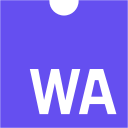

Experiment 03 · Data-driven testen
SQL-lab
Een magazijndatabase voor cateringtrolleys op ICE-treinen, als echte SQL-database in je browser. Elke businessregel is een test in SQL. Stel zelf vragen aan de data, breek iets met de chaosknop en kijk of de datakwaliteitstests het vinden.
- SQL
- SQLite

WebAssembly- Data-driven testing
- Datakwaliteit
Schema bekijken
Nog niet uitgevoerd 0/8
Alles draait lokaal in je browser; niets wordt verstuurd. Het schema en de data zijn verzonnen en vereenvoudigd.
Deze demo heeft JavaScript nodig.
L3Hoe het werkt
Wat je hier ziet
-
01
Een echte database in je browser
Geen nagemaakte tabel: SQLite draait als WebAssembly in je browser. Je kan elke SELECT, UPDATE of DELETE uitvoeren, en niets verlaat je toestel.
-
02
Elke regel is een query
Elke businessregel is een query die de overtredingen teruggeeft. Nul rijen betekent groen. Zo test je businesslogica rechtstreeks in de data, onafhankelijk van de gebruikersinterface.
-
03
Chaos als oefening
De chaosknop brengt een realistische datafout aan: een dubbele scan, een trolley die te vroeg als beladen staat, een verlopen houdbaarheidsdatum. De testsuite moet hem vinden.
In mijn werk schrijf ik zulke controles en de bijhorende testdata in Oracle PL/SQL, voor PROLOG bij Deutsche Bahn. Hier draait SQLite zodat je het zelf kan proberen; schema en data zijn verzonnen en bevatten niets uit het echte systeem.